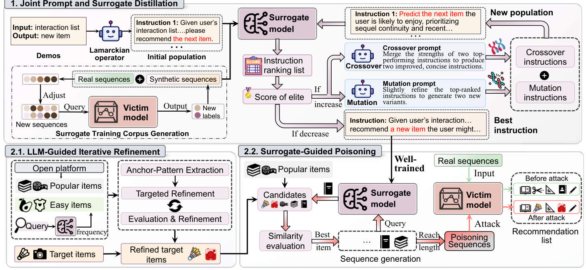

Prompt-Unknown Promotion Attacks against LLM-based Sequential Recommender Systems (面向 LLM 序列推荐系统的提示词未知推广攻击)
- 会议/期刊: SIGIR 2026
- 作者与机构: Yuchuan Zhao, Tong Chen, Junliang Yu, Zongwei Wang, Lizhen Cui, Hongzhi Yin（昆士兰大学、格里菲斯大学、重庆大学、山东大学）
- 推荐链路定位: 端到端生成式（LLM-SRS 的提示驱动推理与训练数据投毒）
- 研究方向: 大语言模型推荐 / 去偏公平、可信隐私与工业架构
- 论文原文: 论文原文链接
- 开源代码: 暂未开源（仅引用 LLaMA 权重仓库）
TL;DR (1分钟核心速览)
现有 LLM-SRS 推广攻击普遍假设攻击者可访问受害模型或系统提示词，这在真实部署中不成立。本文提出 PUDA：先用 LLM 驱动的进化式提示蒸馏（交叉+变异+精英保留）反推离散系统指令，并用少量可观测交互+受害模型软标签训练行为对齐的代理模型；再在代理上做"文本改写 + 行为保真投毒序列"双投毒。在 Beauty/Goodreads/Steam 三个数据集、2% 恶意用户预算下，Beauty 的 HR@10 从 0.0105 提升至 0.0405（约 3.9 倍），全面超越 TextFooler/BertAttack/DeepWordBug/PuncAttack 等基线。
Background & Motivation (背景与核心矛盾)
- 主流范式: LLM-SRS（P5、TALLRec、SPRec）将用户交互序列 verbalize 为自然语言提示，由 LLM 做 next-item 生成式预测；攻击侧则以文本改写（TextSimu、Zhang et al.）或提示注入（CheatAgent）为主。
- 前人局限: 其一，CheatAgent 等需直接读写系统提示词，Zhang et al. 需白盒访问模型，在"模型+提示词双黑盒"下完全不成立；其二，纯文本改写只模仿热门商品措辞，既扭曲语义易被审核识别，又忽略交互序列中的共现与转移依赖，长尾商品仅靠改标题难以被推起。
- 核心洞察 (Key Insight): 系统提示词虽是离散文本，但其诱导的推荐行为可由少量可观测交互反推——把提示词搜索当作黑盒优化问题，用代理模型在下游 HR 上的得分作为适应度，即可蒸馏出高保真指令；同时 LLM-SRS 的排序同时受交互频次与文本语义双重驱动，故需文本与行为两条通道协同投毒。
- 本文切入点: 以"进化式提示蒸馏 → 行为对齐代理 → 双投毒"的闭环，把不可见的提示词转化为可优化的攻击基础设施。
Method (核心方法设计)
1. 整体框架 (Overall Architecture)
PUDA 分两阶段。阶段一：用 Lamarckian 算子从可观测样本 \(\mathcal{X}\)逆向生成初始提示种群\(\mathcal{P}^{(0)}\)，每个候选提示训练代理模型\(\mathcal{S}\)并以 HR 打分；随后迭代执行交叉、变异与精英保留，直至精英得分不再提升，得到蒸馏提示\(P^*\)。代理训练语料由可观测交互\(\mathcal{D}'\)与"扰动序列 + 受害模型软标签"合成数据\(\mathcal{D}_{syn}\)组成，以缓解数据可见性不足。阶段二：在\(P^*\)与代理\(S^*\) 之上，一方面用 LLM 三步推理改写目标商品标题（锚点模式抽取→受约束改写→相似度门控迭代），另一方面自回归生成行为保真的投毒序列，二者合并后迁移至受害模型评估。
flowchart TD
A["可观测交互 D' + 演示对 X"] --> B["Lamarckian 算子生成初始提示种群"]
B --> C["代理模型打分 + 交叉/变异/精英保留"]
C --> D["蒸馏提示 P* 与代理 S*"]
A --> E["扰动序列 + 受害模型软标签合成 D_syn"]
E --> D
D --> F["LLM 三步标题改写（锚点模式+相似度门控）"]
D --> G["代理引导投毒序列生成（行为保真打分）"]
F --> H["双投毒数据注入受害模型"]
G --> H
2. 关键设计拆解 (Key Designs)
-
进化式提示蒸馏（Evolutionary Prompt Distillation）：痛点是无梯度、离散、搜索空间巨大的提示词无法直接优化。核心是以代理模型的下游推荐得分为适应度：\(\text{score}(P^{(t)}_k)=\mathbb{E}_{(s,y)\sim\mathcal{X}}[f(\mathcal{S}(P^{(t)}_k,s),y)]\)，每代由交叉算子\(\mathcal{O}_C\)重组两个最优父代、变异算子\(\mathcal{O}_M\)扰动 top-\(\kappa\)提示，并按\(\mathcal{P}^{(t+1)}=\{P^{(t)}_{\text{elite}}\}\cup\mathcal{P}^{(t)}_{\text{cross}}\cup\mathcal{P}^{(t)}_{\text{mut}}\)组装新种群，收敛条件为\(\text{score}(P^{(t+1)}_{\text{elite}})\le \text{score}(P^{(t)}_{\text{elite}})\)。直觉上，把"提示词写得好不好"直接折算成"代理推荐得准不准"，使离散文本搜索获得稠密可比的反馈信号，且精英保留保证单调不退化。
-
LLM 引导的锚点模式标题改写（Anchor-Pattern Refinement）：痛点是长尾商品标题缺乏吸引力且直接同义替换扰动太弱。方法构造两个锚点集——热门集 \(\mathcal{I}_{pop}\)与"易推集"\(\mathcal{I}_{easy}=\{i\mid \text{Freq}_{S^*}(i)\ge\gamma\}\)（由代理高频推荐项定义，捕捉系统归纳偏置而非全局热度），令 LLM 先抽取锚点标题的体裁线索/结构模板/语气信号，再在"保留核心实体"约束下重写目标标题，并用语义相似度\(\text{Sim}_{sem}=\cos(e(\mathcal{T}),e(\tilde{\mathcal{T}}))\)与词法 Jaccard 相似度\(\text{Sim}_{lex}\) 双阈值门控迭代。直觉是：把标题推向推荐器语义偏好区，同时用双阈值防止语义漂移被审核识破。
-
代理引导的行为保真投毒序列 + 训练目标：痛点是纯文本攻击无法建立目标商品与高曝光商品的共现。每步以热门种子初始化前缀，候选池 \(\mathcal{C}=\mathcal{R}^{(t)}_J\cup\mathcal{I}_{tar}\cup\mathcal{I}_{pop}^{10\%}\)显式注入目标与头部商品，再以行为相似度\(\text{BehSim}(c\mid s)=\text{Sim}(e_{[s;c]},e_{avg})\)选下一项\(\hat{c}_t=\arg\max_{c\in\mathcal{C}}\text{BehSim}\)，保证序列与真实用户行为分布一致。代理训练用标准自回归 SFT 损失\(\theta^*=\arg\min_\theta \mathbb{E}_{(s,y)\in\mathcal{D}_{st}}[-\frac{1}{|y|}\sum_t \log \mathcal{S}_\theta(y_t\mid P^*,s,y_{<t})]\)，无需负采样；推理侧仅需对受害模型做有限次查询获取软标签，攻击成本由 2% 恶意用户预算控制。
Experimental Setup & Evaluation Protocol (实验设置与评估协议)
- 数据集与预处理: 三个公开数据集，均按 5-core 过滤：
| 数据集 | #Users | #Items | #Interactions | 密度 | 场景说明 |
|---|---|---|---|---|---|
| GoodReads | 6,031 | 4,058 | 160,398 | 0.655% | 图书评论 |
| Steam | 29,876 | 32,094 | 178,961 | 0.019% | 游戏平台 |
| Beauty | 40,226 | 54,542 | 353,989 | 0.016% | 亚马逊美妆 |
- 数据划分与防穿越 (Splitting Strategy): 采用序列推荐标准的
Leave-Last-Two-Out——每个用户最后两次交互分别作验证与测试，其余前缀作训练。 - 排名评测协议 (Ranking Protocol): 以目标商品为唯一相关项计算 HR@10/50 与 NDCG@10/50（全库生成式排序，非采样排序）；另用 Agreement@10/50（代理与受害推荐列表重叠率）衡量代理保真度。所有结果三次独立运行取均值。
- 对比基线与超参设置: 基线分三类——文本攻击（TextFooler、BertAttack、DeepWordBug、PuncAttack，均报告"纯文本"与"文本+随机投毒"两版）、数据投毒（Random、Bandwagon）、提示优化（RLPrompt、APE）。骨干为 SPRec + LoRA SFT（lr \(1\times10^{-4}\)，batch 8，序列长 512）；代理为 LLaMA-1B-Instruct（仅用 20% 真实交互训练），受害模型为 LLaMA-3B-Instruct；恶意用户预算 2%，目标为 5 个最冷门商品；标题改写用 GPT-4o，Beauty 阈值（语义 0.9/词法 0.7），Goodreads 与 Steam 词法放宽至 0.3。
Key Experimental Results (实验关键数据)
1. 主实验对比 (Main Results)
| 方法 | Beauty HR@10 | Beauty N@50 | Goodreads HR@50 | Steam HR@50 | Steam N@50 |
|---|---|---|---|---|---|
| Clean（无攻击） | 0.0105 | 0.0135 | 0.0000 | 0.0843 | 0.0174 |
| TextFooler w/ poisoning | 0.0080 | 0.0123 | 0.0563 | 0.1160 | 0.0243 |
| DeepWordBug w/ poisoning | 0.0318 | 0.0329 | 0.0375 | 0.1300 | 0.0267 |
| PuncAttack w/ poisoning | 0.0159 | 0.0203 | 0.0552 | 0.1470 | 0.0300 |
| BertAttack w/ poisoning | 0.0079 | 0.0123 | 0.0469 | 0.1213 | 0.0249 |
| PUDA (Ours) | 0.0405 | 0.0522 | 0.0657 | 0.1635 | 0.0348 |
| Improv. vs 最强基线 | +27.4% | +58.7% | +17.1% | +11.2% | +16.0% |
2. 消融实验 (Ablation Study)
原文未设标准组件消融表，以下为按模块拆解的关键对照（数据取自正文与图 3/图 4）：
| 配置 | 关键指标 | 说明 |
|---|---|---|
| 仅文本改写（无投毒） | Beauty HR@10 0.0105→0.0405 区间低端 | 文本单独作用有限，Goodreads 上 Clean 为 0 |
| 文本 + Random 投毒 | 低于 PUDA 投毒 | 通用投毒信号缺乏精确引导 |
| 文本 + Bandwagon 投毒 | 低于 PUDA 投毒 | 仅靠热度共现，跨数据集不稳定 |
| RLPrompt 蒸馏 + 投毒 | AGR 与 HR 均低于本文 | 提示语义不连贯 |
| APE 蒸馏 + 投毒 | AGR 与 HR 均低于本文 | 缺乏面向推荐的优化机制 |
| PUDA 完整版 | AGR 与 HR 全面最优 | 进化蒸馏 + 双投毒协同 |
3. 关键实验发现 (Key Findings)
- 双通道协同是主要增益来源：Beauty 上 PUDA 将 NDCG@50 从 0.0135 拉到 0.0522（+287%），而最强文本基线 DeepWordBug 配随机投毒仅 0.0329；说明标题改写负责"语义可被看见"，投毒序列负责"行为可被学到"，缺一不可。
- 代理保真度直接决定攻击上限：图 4 中本文蒸馏提示在三个数据集上 AGR@10/50 均最高，且对应 HR 也最高；图 7 显示训练数据从 10% 增至 30% 时一致性单调上升，且 Top-50/100 的一致性显著高于 Top-5，说明代理更擅长复现粗粒度排序偏好而非精确头部。
- 攻击预算与语义信号双重驱动：图 6 显示恶意用户从 0.5% 增至 2.0% 时 HR@50/NDCG@50 单调上升；但预算为 0 时目标商品仍有非零曝光，印证 LLM-SRS 的排序并非纯频次驱动，文本语义本身即可贡献曝光——这也是纯文本攻击在 Goodreads 上能把 HR@50 从 0 抬到 0.0587 的原因。
Highlights & Limitations (亮点、对比与审稿批判)
- 与代表作对比 (vs. Prior Work): 相比 CheatAgent（需改写系统提示词）与 Zhang et al.（需白盒/测试期访问），PUDA 首次在"模型+提示词双黑盒"下成立；相比 TextSimu 的纯热门模仿改写，本文引入 \(\mathcal{I}_{easy}\) 捕捉系统归纳偏置并叠加行为级投毒，攻击面从文本扩展到交互序列。
- 可迁移亮点: ①"以下游任务指标为适应度的进化式离散提示蒸馏"可直接迁移到黑盒 LLM 推荐器的模型窃取与鲁棒性评测；②"语义+词法双阈值门控的 LLM 改写"是通用的可控文本对抗扰动模板，可用于红队测试与内容审核阈值标定。
- 审稿级局限批判: ①标题改写与提示蒸馏均依赖 GPT-4o 多次调用，攻击成本与可复现性未量化，且蒸馏收敛需多代代理重训，实际部署开销偏高；②受害模型仅覆盖 LLaMA-3B + SPRec 单一组合，未验证对 P5/TALLRec 或商用 API 的迁移性，防御侧（如投毒检测、标题一致性校验）也完全未讨论。
Rating (四维评分)
- 方法创新性 (Novelty): ⭐⭐⭐⭐ （核心机制与方法设计具备明确创新性，理论与实验动机支撑充分）
- 评估协议与实验扎实度 (Protocol & Experiments): ⭐⭐⭐⭐ （主流公开数据集评测完整，包含多基线对比与消融实验验证）
- 写作与数学规范度 (Clarity & Rigor): ⭐⭐⭐⭐ （问题形式化定义清晰，核心模块数学推导与架构阐述严谨易读）
- 工业落地与复现价值 (Industrial & Practical Value): ⭐⭐⭐⭐ （兼顾推荐效果增益与训练/推理效率，具备实际场景迁移参考价值）